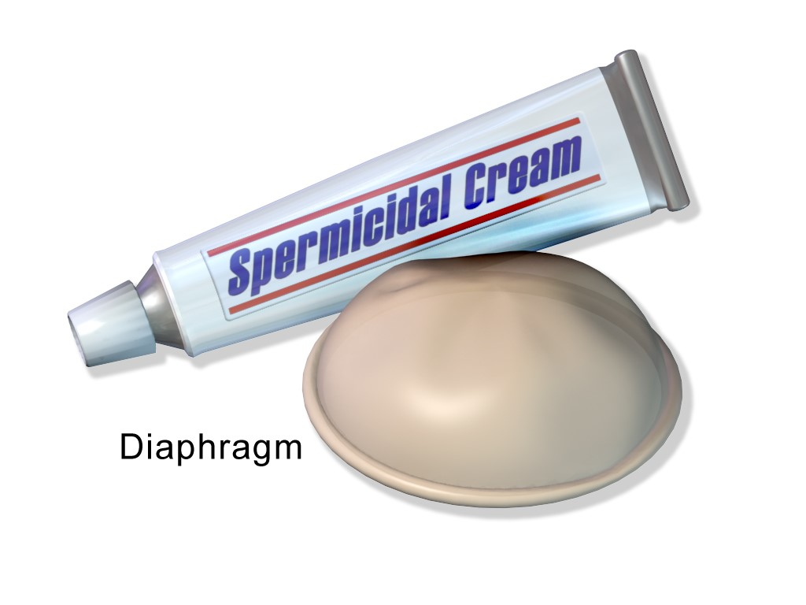
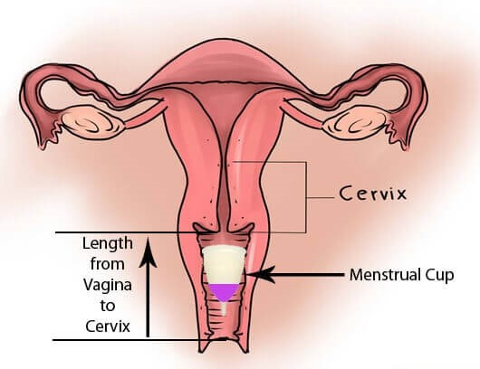
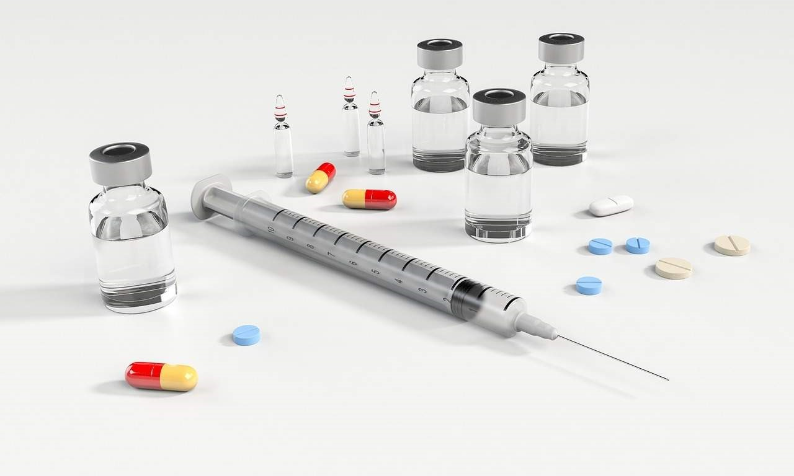
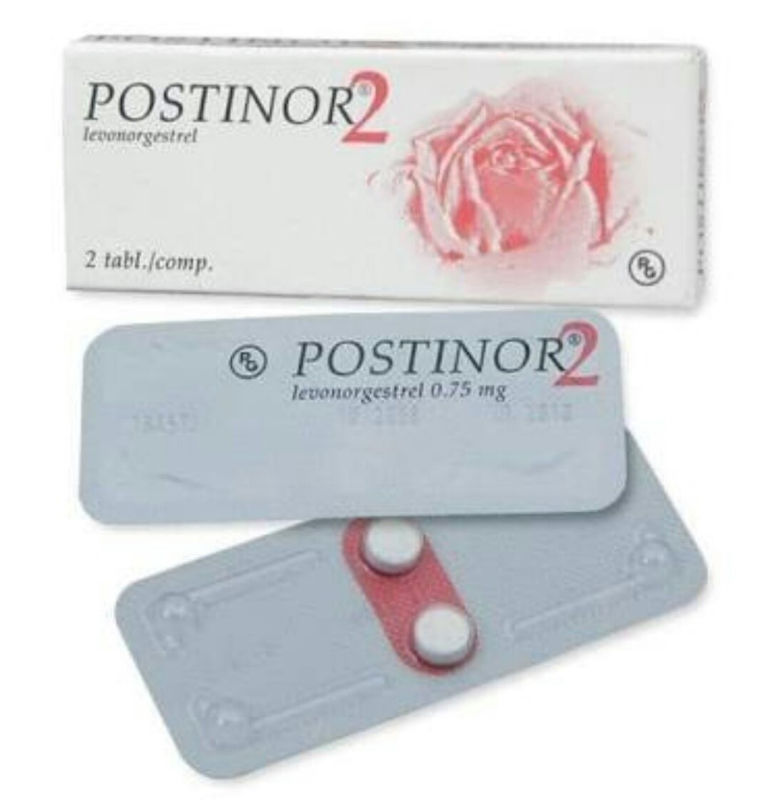
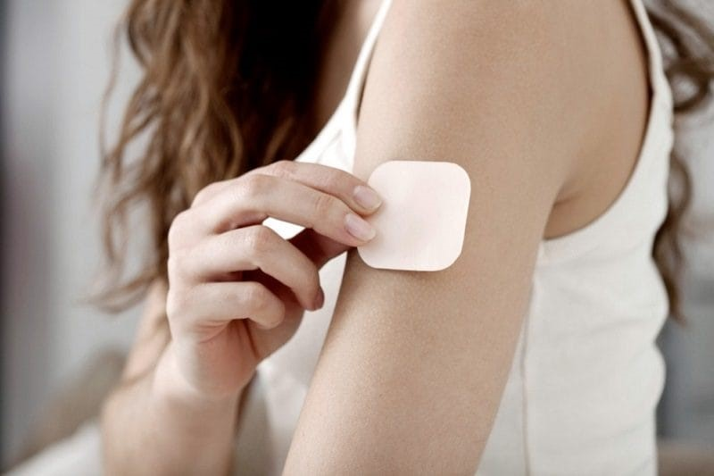
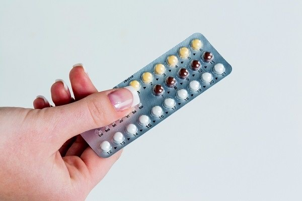
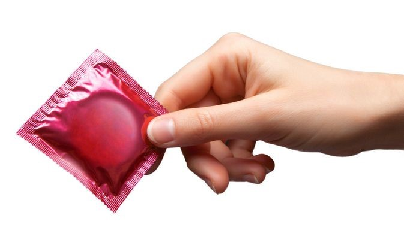

Keluarga Berencana

Pelayanan kontrasepsi/KB
Kontrasepsi/KB berguna dalam merencanakan jehamilan dengan mengatur kapan waktu yang tepat untuk hamil, mengatur jarak dan jumlah anak.
Spermisida

Kelebihan :
- Efektif seketika (busa)
- Tidak mengganggu produksi ASI
- Tidak menggangu Kesehatan klien
- Tidak memiliki pengaruh sistematik
- Mudah digunakan
- Meningkatkan lubrikasi selama hubungan seksual
- Tidak memerlukan resep ataupun pemeriksaan medis
Kekurangan :
- Iritasi vagina/jenis dan tidak nyaman
- Iritasi vagina/jenis dan tidak nyaman
- Tablet busa vaginal tidak larut dengan baik
Cervical Cup

Kelebihan :
- Bisa dipakai jauh sebelum hubungan
- Mudah dibawa dan nyaman
- Tidak mempengaruhi siklus haid
- Tidak mempengaruhi kesuburan
Kekurangan :
- Tidak melindungi dari HIV/AIDS
- Berisiko menimbulkan alergi
- Cup dapat lepas saat berhubungan
Suntik Kontrasepsi

Kelebihan :
- Dapat digunakan oleh ibu menyusui (suntik 1 bulan)
- Tidak perlu di konsumsi setiap hari atau dipakai sebelum melakukan hubungan seksual
- Darah menstruasi menjadi lebih sedikit dan membantu mengatasi kram saat mentruasi
Kekurangan :
- Dapat mengganti siklus menstruasi
- Berisiko menyebabkan kenaikan berat badan pada beberapa wanita
- Tidak melindungi dari penyakit menular seksual
Pil Kontrasepsi Darurat

Kelebihan:
- Mempengaruhi hormon
- Digunakan maksimal 72 jam setelah hubungan seksual tanpa kontrasepsi
Kekuranag:
Kontrasepsi Patch

Kelebihan:
- Wanita menggunakan patch (berbentuk seperti koyo) untuk penggunaan selama 3 minggu 1 minggu berikutnya tidak perlu menggunakan koyo KB
Kekuranag:
- Sama seperti kontrasepsi oral namun jarang ditemukan adanya perdarahan tidak teratur
Pil

Kelebihan:
- Dapat mengontrol waktu untuk terjadinya menstruasi
- Untuk pil tertentu dapat mengurangi timbulnya jerawat
Kekurangan:
- Pusing, mual, muntah
- Perubahan mood, sakit kepala
- Spotting (keluar bercak darah)
- Harus rutin diminum setap hari
- Harganya mahal
Kondom

Kelebihan:
- Mencegah kehamilan dan infeksi menular seksul
- Tidak mempengaruhi kesuburan
- Mudah digunakan dan di dapat
Kekurangan:
- Mudah robek
- Beberapa pria tidak dapat mempertahankan ereksinya saat menggunakan kondom
- Setelah ejakulasi pria harus menarik penisnya dari vagina
- Berisisko menimbulkan alergi